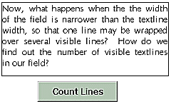
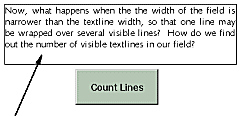
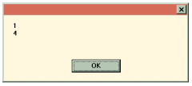

Australian Toolbook User Group


A textline is a specific line of text in a toolbook field. For example: textline 1 of field "x" = "hi" would set the first line of that field to the word 'hi'.
Built In SortTextLines function Solution by Jeffrey Rhodes
Question: I'm having some problems with the sortTextLines function. I'm running ToolBook II Publisher 5.0 under Win95 with 32megs RAM and at least 25megs free on all of my disks. When I run the following code in the command window I am getting a dialog box with NO text (except for the OK button). The system gives me no error message.
x = "C" & CRLF & "B" & CRLF & "A" y=sortTextLines(x) request y
Answer: I would suspect that you are not linking in the function. Somewhere (e.g., enterApplication), you need the lines:
linkDLL "tb50dlg.dll" STRING sortTextlines(STRING) end linkDLL
Counting the number of text lines the user can actually see in a field.

Normally we count the number of textlines in a Toolbook text field by using the following code:
textLineCount( text of field "fldName" )
Now, what happens when the width of the field is narrower than the textline width, so that one line is wrapped over several lines? How do we find out the number of visible textlines in our field that the user is perceiving ? This is a way of doing it - here it is:
Question: I need a method for measuring the percent of a field scrolled. I can use the "scroll" property of the field to measure the number of lines scrolled above the top margin. However, I can't find a reliable way to measure the total lines in the field. Dividing the two would give me what I need. The "textlinecount" function only gives me the number of textlines (up to crlf) in the field.
Answer: How about locking the screen, setting the scroll to 10,000 (well above the real limit) and then reading the value of 'scroll' which will now be the last possible line you could possibly scroll to...then set the scroll back to 0 and unlock the screen.
To illustrate the above solution, I have written a function called textLineCountVisible. To understand how it works, do the following:
NOTE: You don’t have to put in a line with only 1 carriage return. I suggest this only so that your results match the example given here.
to handle buttonclick
request textlinecount(text of field "x") &crlf&\
textLineCountVisible( field "x" )
end
You should have something like this:

Even though the Toolbook function textLineCount reports 1 as the number of textlines in the field, we want to know how many lines we actually see.
I have written the following function to help us. Place it in the button’s script, or somewhere else in the object hierarchy e.g. in the page’s script, or in the book’s script - or even in your system book’s script, if you have one.
to get textLineCountVisible fld -- Lock the screen so that the -- text stays in place whilst we are making -- our calculations. savLock = sysLockScreen sysLockScreen = true -- Do the trick savScroll = scroll of field "x" scroll of field "x" = 10000 get scroll of field "x" scroll of field "x" = savScroll sysLockScreen = savLock -- Adjust the result slightly return it + 1 end
Ok. That’s it. Switch to run mode and press the button. You should get the following result:

which means that there is 1 textline which wraps to make 4 ‘visual’ textlines. Neat eh? Now try resizing the field e.g. making it narrower - resulting in even more wrapping and thus more 'visual textlines.
 Bonus
Bonus
This technique will work for rich text, meaning big fonts and text effects etc don't affect the accuracy of the algorithm.
To access thousands more tips offline - download Toolbook Knowledge Nuggets